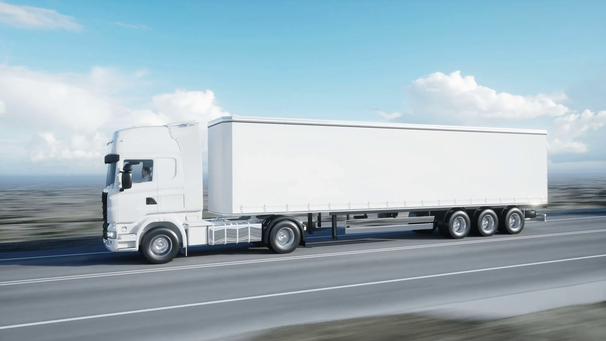

Welcome to NewCo.

Established in 2001 NewCo is an independent air brake supplier which has grown from a family-run company in Manchester, to a business providing worldwide services.
We only supply genuine parts, including but not limited to: Wabco, Knorr-Bremse and Haldex parts, including Bosch, Kongsberg, Magneti Marelli, Paul Dahl, Bendix, Clayton Dewandre, Grau, Neway, Parker, Bertocco, Acceval, WKV, BPW, Norgren and Rexroth.
To us, building relationships is at the heart of our business, join our business account database and receive 10% of your first order!
In the past 3 years we have invested £1m in social responsibility. We have been working since establishment to reduce the amount of waste generated from our warehouses. As a result, we have met our target year on year of recycling at least 97% of used-parts year on year.
If you are interested in joining our ever growing team, please send us your CV to: vacancies@newco.com.